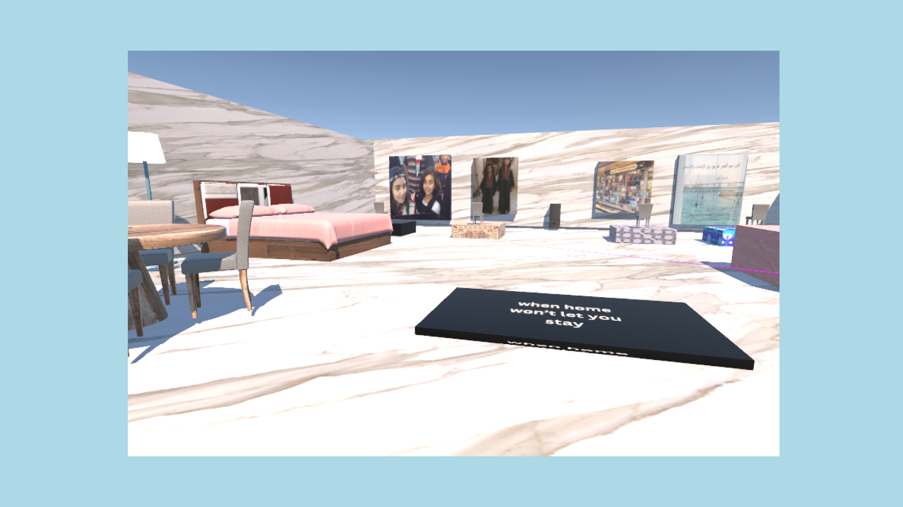
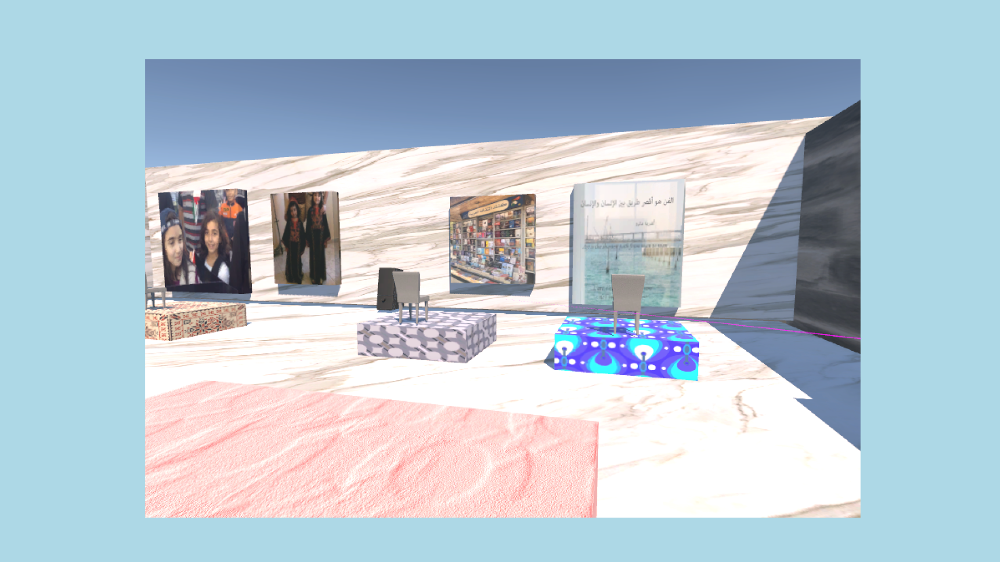
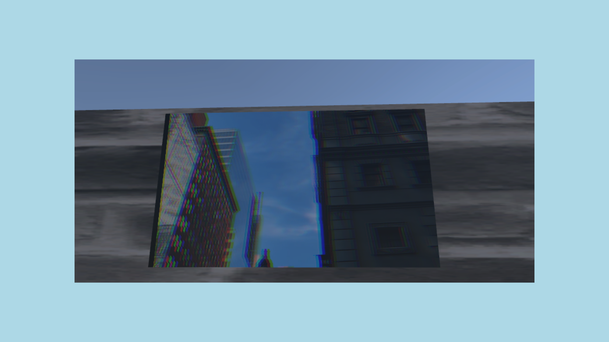

Interactive Experience · Game Design



How can game design and interactive environments be used to tell deeply personal stories?
When Home Won't Let You Stay is an interactive Unity experience that transforms spatial storytelling, UX design, and soundscapes into a digital exploration of memory, displacement, and identity.
Built as a symbolic "box", the project mirrors the experience of growing up in the UAE while carrying an ever-present connection to home. Users move through the space, discovering interactive objects—an embroidered rug, family photos, and traditional clothing—each triggering a layered narrative that explores diaspora, memory, and cultural connection.
Immersive Interaction Design – Developed a Unity-based spatial narrative where users uncover meaning through movement and object-based exploration.
Game Mechanics for Storytelling – Designed a nonlinear experience where users piece together a fragmented history rather than following a predefined path.
Dynamic Sound Integration – Implemented spatial audio that shifts as users explore, layering ocean waves, a Palestinian lullaby, Ghassan Kanafani's words, and news reports on Shireen Abu Akleh.
UX for Emotional Engagement – Focused on intuitive navigation, responsive interactions, and environmental storytelling to enhance immersion.